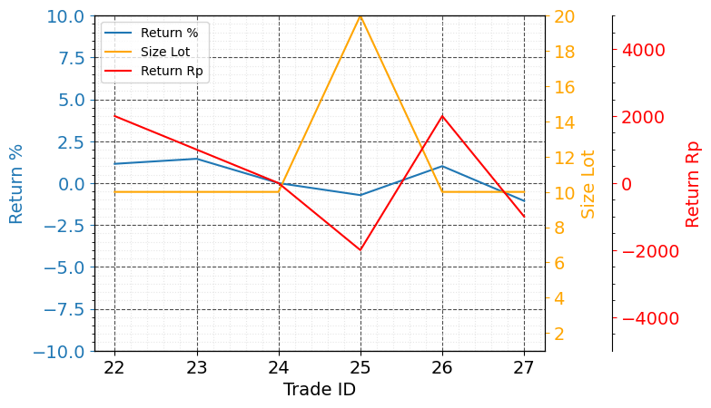

Jajan Sore
Evaluasi Jajan Sore 26 Apr 2023 - 19 May 2023
Statistik:
- Win Rate (%): 61.9
- Total Return (Rp): 4510
- Max Return (Rp): 3000
- Min Return (Rp): -3000
- Total Return (%): 8.07
- Max Return (%): 3.58
- Min Return (%): -6.98
Win rate cukup baik 61.9% dan total net return adalah positif yaitu Rp. 4510.
Grafik:
Profit terbesar terjadi ketika menggunakan lot size 2, dan loss terbesar ketika menggunakan lot size 2.
Evaluasi Jajan Sore 22 May 2023 - 26 May 2023
Statistik:
- Win Rate (%): 50.0 - Total Return (Rp): 2000 - Max Return (Rp): 2000 - Min Return (Rp): -2000 - Total Return (%): 1.83 - Max Return (%): 1.45 - Min Return (%): -1.06
Win rate 50.0% dan total net return adalah positif yaitu Rp. 2000.
Grafik:
Trading no 25 dan 26 melakukan kesalahan yaitu beli saat belum closing. Trading no 25 melakukan kesalahan dengan HAKA lagi saat sudah closing, kemudian langsung keluar saja untuk mengakui kesalahan.